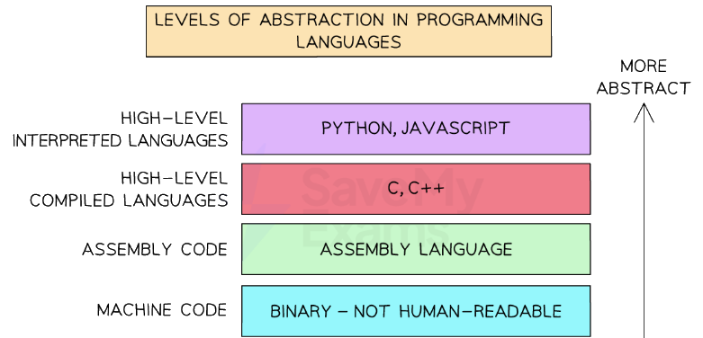

Assembly Language Basics
Machine code vs assembly
What is machine code?
- Machine code is a first-generation language
- Instructions are directly executable by the processor
- Written in binary code

Levels of Abstraction of Programming Languages
What is assembly?
- Assembly code is a second-generation language
- The code is written using mnemonics, abbreviated text commands such as LDA (Load), STA(Store)
- Using this language programmers can write human-readable programs that correspond almost exactly to machine code
- One assembly language instruction translates to one machine code instruction
- Needs to be translated into machine code for the computer to be able to execute it
- Each type of computer CPU has a specific instruction set
Instruction set
- An instruction set is a list of all the commands that can be processed by a CPU
- Each command has a binary code which is the machine code
- In assembly the binary code is written using mnemonics and split into an opcode and operand
- The opcode is the part of an instruction that tells the CPU what operation to perform
- It’s short for “operation code”
- Example operations: LDA (load), STA (store), ADD, INP, OUT, BRZ, BRA
- The operand is the data or memory address the opcode will work with
- It gives the extra detail the CPU needs to complete the instruction
- Often used to specify a memory address, a value, or a label
| Opcode | Operand | Explanation |
|---|---|---|
LDM |
#n |
Immediate addressing. Load the number n to the accumulator (ACC). |
LDD |
Direct addressing. Load the contents of the location at the given address to ACC. | |
LDI |
Indirect addressing. Use the value at the given address as a new address. Load contents to ACC. | |
LDX |
Indexed addressing. Use+ index register to get the final address. Load to ACC. |
|
LDR |
#n |
Immediate addressing. Load the number n to the index register (IX). |
MOV |
Move the contents of ACC to the given register (e.g. IX). | |
STO |
Store the contents of ACC at the given memory address. | |
ADD |
Add the contents of the given address to ACC. | |
SUB |
Subtract the contents of the given address from ACC. | |
INC |
Increment the contents of the register (ACC or IX) by 1. | |
DEC |
Decrement the contents of the register (ACC or IX) by 1. | |
JMP |
Unconditional jump to the given address. | |
CMP |
Compare the contents of ACC with the contents of the given address. | |
CMP |
#n |
Compare the contents of ACC with the number n. |
CMI |
Indirect addressing. Compare ACC with the contents at the address stored in | |
JPE |
Jump to if the previous compare result was true (equal). |
|
JPN |
Jump to if the previous compare result was false (not equal). |
|
IN |
Take input from the keyboard and store its ASCII value in ACC. | |
OUT |
Output to the screen the character stored in ACC. | |
END |
End the program and return control to the operating system |
Assembly Process
Two-pass assembler
What is a two-pass assembler?
- A two-pass assembler translates assembly language into machine code in two stages
- It produces an object program that can be stored, loaded, and run later
- To execute this program, another utility called a loader is needed
- The assembler scans the source code twice:
- In the first pass, it identifies all labels and records their memory addresses
- In the second pass, it replaces those labels with the correct memory addresses in the machine code
- This ensures the final machine code is accurate and ready to be executed
Example
- The following program loads the value of
A(5), adds the value ofB(3), stores the result (8) inC, then halts:
LOAD A
ADD B
STORE C
HALT
A: DATA 5
B: DATA 3
C: DATA 0
- Pass 1:
- The assembler reads each line and assigns memory addresses to labels (e.g. A, B, C), but does not translate the instructions yet
| Address | Instruction | Label | Add to symbol table |
|---|---|---|---|
00 |
LOAD A | ||
01 |
ADD B | ||
02 |
STORE C | ||
03 |
HALT | ||
04 |
DATA 5 | A |
A = 04 |
05 |
DATA 3 | B |
B = 05 |
06 |
DATA 0 | C |
C = 06 |
Symbol table created:
| Label | Address |
|---|---|
| A | 04 |
| B | 05 |
| C | 06 |
- Pass 2:
- The assembler replaces labels with their corresponding memory addresses and outputs machine code
- In this example we assume the following opcodes for simplicity:
| Mnemonic | Opcode |
|---|---|
| LOAD | 01 |
| ADD | 02 |
| STORE | 03 |
| HALT | 00 |
| DATA | - |
- Now generate the object (machine) code:
| Address | Assembly | Machine code | Explanation |
|---|---|---|---|
00 |
LOAD A | 01 04 |
LOAD from address 04 |
01 |
ADD B | 02 05 |
ADD value at address 05 |
02 |
STORE C | 03 06 |
STORE into address 06 |
03 |
HALT | 00 00 |
Stop program |
04 |
DATA 5 | 00 05 |
Data value 5 |
05 |
DATA 3 | 00 03 |
Data value 3 |
06 |
DATA 0 | 00 00 |
Data value 0 (placeholder) |
Final object program:
01 04
02 05
03 06
00 00
00 05
00 03
00 00
Program tracing
What is a trace table?
- A trace table is a table used to manually track the values of variables as a program runs
- It helps to follow the flow of a program line by line, checking whether the logic works as expected
- Trace tables are used to:
- Understand how a program works
- Debug errors in the logic
- Predict outputs before running the program
- Check variable values at each step
Example
- An assembly program that loads the value from
A(4) into the accumulator, adds the value fromB(2), stores the result (6) intoC, and halts
LOAD A
ADD B
STORE C
HALT
A: DATA 4
B: DATA 2
C: DATA 0
- To trace the program, assumptions must be made:
- Accumulator (ACC): Used for calculations
- Memory is addressed from 00 onwards
- Simple instructions:
LOAD X→ ACC = memory[X]ADD X→ ACC = ACC + memory[X]STORE X→ memory[X] = ACCHALT→ Stop Trace table
- Accumulator (ACC): Used for calculations
| Step | Instruction | ACC (Accumulator) | Memory[A] | Memory[B] | Memory[C] |
|---|---|---|---|---|---|
| 0 | (Start) | 0 | 4 | 2 | 0 |
| 1 | LOAD A | 4 | 4 | 2 | 0 |
| 2 | ADD B | 6 | 4 | 2 | 0 |
| 3 | STORE C | 6 | 4 | 2 | 6 |
| 4 | HALT | 6 | 4 | 2 | 6 |
Final outcome:
- ACC = 6
- C = 6
- The program has successfully added A and B, then stored the result in C
Instruction Groups
Categories of instructions
What are the categories of instructions?
- Assembly language instructions can be grouped into:
- Data movement
- Input and output of data
- Arithmetic operations
- Unconditional and conditional instructions
- Compare instructions
- For each category, a table containing the instruction (Opcode and Operand), and an explanation is given
| Category | Opcode | Operand | Explanation |
|---|---|---|---|
| Data Movement | LOAD |
A |
Loads the value stored at memory location A into the accumulator. |
STORE |
B |
Stores the value from the accumulator into memory location B. |
|
MOV |
A, B |
Copies the value from register/memory A to register/memory B. |
|
CLEAR |
ACC |
Clears the accumulator (sets it to 0). | |
DATA |
5 |
Declares a constant or data value (e.g. DATA 5 stores the value 5). |
|
| Input and Output of Data | IN |
Takes input from a user or input device and stores it in the accumulator. | |
OUT |
Outputs the value in the accumulator to a screen or output device. | ||
| Arithmetic Operations | ADD |
A |
Adds the value at memory location A to the accumulator. |
SUB |
B |
Subtracts the value at memory location B from the accumulator. |
|
INC |
Increments the accumulator by 1. | ||
DEC |
Decrements the accumulator by 1. | ||
| Unconditional and Conditional | JMP |
LABEL |
Unconditionally jumps to the instruction at LABEL. |
JZ |
LABEL |
Jumps to LABEL if the accumulator is zero. |
|
JNZ |
LABEL |
Jumps to LABEL if the accumulator is not zero. |
|
JC |
LABEL |
Jumps to LABEL if the carry flag is set. |
|
HLT |
Stops the program (halts execution). | ||
| Compare Instructions | CMP |
A |
Compares the accumulator with the value at memory location A. |
TEST |
A |
Performs a logical AND between accumulator and A; sets flags, no output. |
Addressing Modes
Addressing methods
What is an addressing method?
- An addressing method is a way in which an instruction in assembly language or machine code can access data stored in memory
- There are five main addressing methods:
- Immediate
- Direct
- Indirect
- Indexed
- Relative
| Addressing mode | Description | Example instruction | Explanation |
|---|---|---|---|
| Immediate | The operand is a constant value included directly in the instruction | MOV AX, 1234h |
Moves the immediate value 1234h into the AX register |
| Direct | The exact memory address of the operand is given in the instruction | MOV AX, [1234h] |
Moves the value stored at memory location 1234h into the AX register |
| Indirect | A register contains the memory address of the operand | MOV AX, [BX] |
If BX = 2000h, this moves the value at memory location 2000h into AX |
| Indexed | Uses a base register and an index to calculate the memory address | MOV AX, [BX + SI] |
If BX = 0050h and SI = 1000h, this moves the value at 1050h into the AX register |
| Relative | The operand is an offset relative to the current instruction address | JMP +5 |
Tells the program to jump forward 5 instructions from the current line Used in branching |